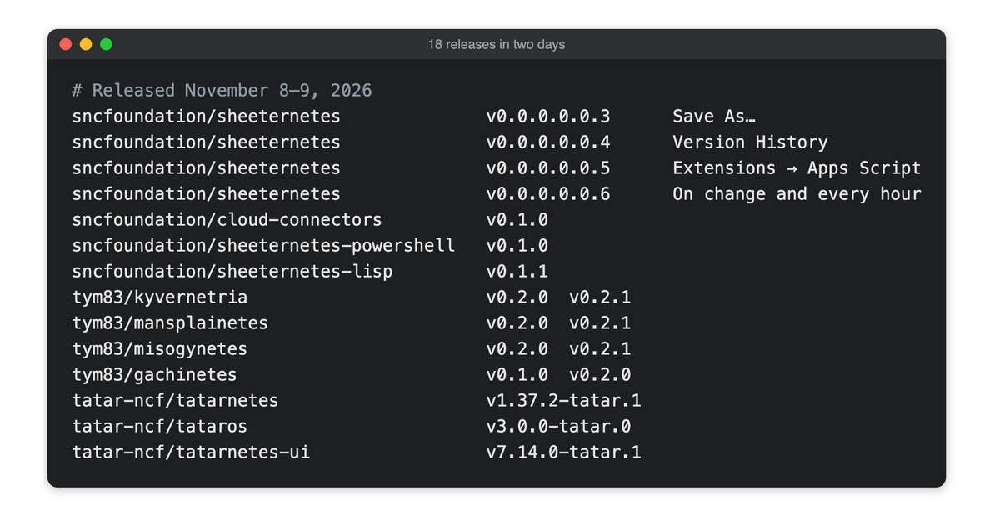
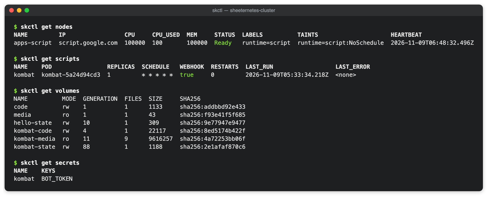
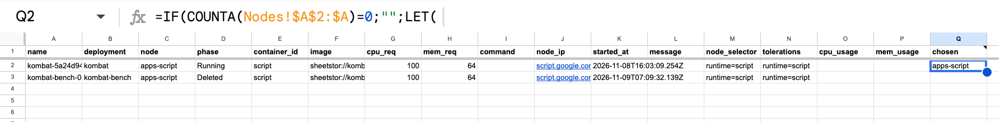

A month ago I wrote about seven releases in one weekend and thought that was a lot. On November 8 and 9 there were eighteen. Seven of them are the foundation's own: four Sheeternetes releases in a row and the first proper releases of three clients and connectors. The other eleven come from friends of the foundation, projects that live outside the SNCF but keep growing next to it, and this time most of them build on the same base, kuberoot.
The biggest news deserves a post of its own, and it got one: Sheeternetes took its first production workload, a Telegram quiz bot that the spreadsheet executes itself. Here is everything else, project by project: what each release is built on and what it gives you.

Sheeternetes: four releases on the way to production
v0.0.0.0.0.3 "Save As…"
The first release is about housekeeping, and its name says it all: same spreadsheet, new file name. Sheeternetes moved out of a personal account into the foundation's own organization, and its repository became product-only. Code.gs, kubelet.sh, skctl, the lab and GitOps stay there, while the website, the CSFE registry and certification moved to the site repository. SheetHub, the GitLab-style forge whose data plane is a spreadsheet, officially joined the stack: it hosts the manifests that Sheetlux CD deploys, so the whole stack now self-hosts on spreadsheets.
v0.0.0.0.0.4 "Version History"
This is the release where the spreadsheet stopped imitating a cluster and started joining them. First, the scheduler is now a spreadsheet formula. setup() installs it into the chosen column of the Pods tab, and Google Sheets itself places every pod: bin-packing on CPU and memory, sticky placement, cordon, node_selector affinity, NoSchedule taints and tolerations. The Apps Script scheduler stays as an option and as an automatic fallback. The formula itself is the one from our September post, now shipped in the product.
Second, the Sheeternetes Virtual Kubelet. A spreadsheet can now join any Kubernetes cluster, Cozystack tenant clusters included, as a node named sheet. Pods that select it run on the spreadsheet's kubelets, with status, an IP address and kubectl logs. Third, a Kubernetes API facade in front of a spreadsheet: real kubectl can get, describe, create, scale, watch, cordon and delete, and k9s talks to the same endpoints. CI drives the facade with a real kubectl against both a fake kubelet and real Docker containers.
The release also brings disaster recovery from the spreadsheet's own version history (skctl revisions and skctl restore --revision or --at; the same history drives the facade's resourceVersion) and an HPA made of a formula and conditional formatting: the Autoscale tab computes desired replicas from real docker stats, and rows over quota turn red. The release notes honestly list what was verified in real Google Sheets (the scheduler and Autoscale formulas) and what only in the emulator.
v0.0.0.0.0.5 "Extensions → Apps Script"
Pods stopped needing a computer. A deployment with runtime: script runs inside the spreadsheet's own Apps Script project, which registers itself as the node apps-script, so the reconcile loop and the scheduler place such pods without any changes. Schedule slots fire exactly once, webhooks come with a dead-letter table, and every invocation is a transaction on the pod's state under the script lock. Sheetstor learned to keep volumes right in cells, as sha256-verified base64 chunks with an atomic generation flip, and secrets moved into Script Properties, never into cells, masked in logs, events and API answers.

This is the release the KUBER KOMBAT bot moved onto. How that went, and what Google taught us along the way, is in Sheeternetes in production.
v0.0.0.0.0.6 "On change and every hour"
The last release grew out of the first days in production, and its main achievement is that the cluster learned to do nothing cheaply. Apps Script counts every trigger execution from its start-up, and the idle production cluster was spending almost two thirds of its 90-minute daily budget. Now an idle cluster runs two executions an hour, under 3% of the budget, and still reacts to API calls and hand edits at once. The reconcile loop cleans up Terminating pods that never got a node, script pods read less per event, and a /score answer from the bot went from 6.1–7.9 to 2.5–4.1 seconds.
The release also fixes the formula scheduler in non-English spreadsheets: in decimal-comma locales, function arguments are separated by semicolons, so formulas are now written in the spreadsheet's own syntax. To catch bugs like this before production does, skctl selftest creates a scratch spreadsheet per locale in the owner's Drive, runs the control plane against real Google Sheets, checks the computed cells and moves the file to the trash. No Google credentials have to live in CI.

Across the foundation
Three more SNCF projects got proper releases. Cloud connectors v0.1.0 reconcile the spreadsheet's deployments onto local Docker and DigitalOcean, with the spreadsheet as the only source of truth. Sheeternetes PowerShell v0.1.0 brings pipeline-native orchestration: Get-SheetNode, Get-SheetPod, Set-SheetScale, Invoke-SheetApply and friends, with the spreadsheet as the backend. And the Lisp client v0.1.1 finally runs as documented: get pods used to print only the usage line, and scale, delete and apply now print the server's answer instead of #<HASH-TABLE>. Still homoiconic.
Less visible but just as important: twenty repositories of the foundation got CI, from lint and smoke workflows to a wasm32 build with tests for skctl-wasm. A dozen READMEs now state a status that matches the code that actually shipped, and seven projects that so far exist only as designs (Sheetgres, SheetMongo, Sheedis, Sheetka, SheetHouse, MySheet and Sheetwire) are marked design-only. The project tiers on this site were synced with the repositories to match. A foundation that preaches neutrality should also be honest about what it has actually built.
Friends of the foundation
The projects below do not belong to the SNCF, but we love them and watch them closely. This time they have a common thread: most of them now build on kuberoot.
kuberoot: the base everyone moved onto
kuberoot builds Kubernetes distributions that boot straight on hardware: its own kernel and PID 1, a node managed through the Kubernetes API, and kubepkg packages. kuberoot does not publish releases yet, so its news lives on main. The bundled components moved to Kubernetes 1.37.2, Linux 6.18.62, etcd 3.7.3, containerd 2.4.2 and kine 0.17.2 (#45). A distribution profile can now offer one service in several interchangeable builds: each node picks one on first boot and keeps it, and a build that keeps crashing can be swapped for the next (#46). Fleet rollouts gained maintenance windows, so nodes get a release only within agreed hours (#47). And the tape, the store's history kept past compaction, can now be read as a journal and restored into a new store with its history (#48).
The etcd 3.7.3 bump was checked by a new end-to-end test that runs in GitHub Actions on QEMU (#49): three control planes upgraded one at a time while a marker is written through one API server and read through another (80 rounds, none failed), a rollback of one node and forward again with its store member intact, and an encrypted backup restored onto a blank disk.
Kyvernetria v0.2.0 and v0.2.1
Kyvernetria, the Kubernetes build whose behavior rests on research-backed average sex differences, now builds from upstream v1.37.2 and v1.36.6, its two "alleles", and can be built as a kuberoot distribution. There, kinit picks the kube-apiserver allele per node at boot using kuberoot's new service alternatives, switches after five crashes in ten minutes and records the choice as a node label. A new command, kyvctl checkup, lists for Ready pods what Ready does not show: recent restarts, OOM kills, readiness probes that cannot see the application. It is based on the camouflaging claim in the project's research file. v0.2.0 also fixed the Immunity admission for kubepkg's privileged namespaces, and v0.2.1 verified that fix end to end: CI builds the node image from source and checks both alleles on a live cluster.
Mansplainetes and Misogynetes v0.2.0 and v0.2.1
Both satirical projects grew out of kubectl wrappers and now work for every client, as server-side admission webhooks with a Helm chart and multi-arch images. Mansplainetes, in namespaces where it is switched on, answers any change a person makes, from kubectl, k9s, Lens or Argo CD, with Warning: lines that retell the change and take credit for it. He always allows the request. He can also narrate a kuberoot node's boot on its console. Misogynetes shares her grievances about troubled pods as admission warnings, and in enforce mode refuses changes until you have listened, with a break-glass annotation for emergencies. System identities, kube-system and leases are never touched, and both webhooks use failurePolicy: Ignore.
The v0.2.1 patches are about rollouts: both webhooks now keep serving for a few seconds after SIGTERM, so requests that reach a terminating pod are no longer let through unanswered. For Misogynetes that closed a real hole in enforce mode, and a crash-looping pod now counts as one grievance instead of a new one on every restart. Releases: Mansplainetes v0.2.0 and v0.2.1, Misogynetes v0.2.0 and v0.2.1.
Gachinetes v0.1.0 and v0.2.0
Gachinetes is a new research distribution built on kuberoot, and v0.1.0 is its first release. Its core is the tape: kuberoot's store keeps cluster history past compaction, and Gachinetes serves it as an aggregated API, so gachictl can show the cluster at any past moment, rewind, list the graveyard and undelete, and a VHS-style web UI plays the history like a tape deck. Around it sit a referee for field managers that keep taking a field from each other, "fantasies" (copy-on-write branches of the cluster at any point of the tape, run with real controllers), a scheduler with weight classes and gang scheduling, live pod migration by CRIU checkpoint and restore, budgets in money and a set of security features. Conformance on a three-VM kuberoot cluster came out at 461 of 462 tests; the one failure was a probe timeout on a loaded VM and passed when run on its own.
v0.2.0 ships the tape to S3-compatible storage as it is written, with age encryption, and gachictl tape restore --from s3://… --at brings the store back with its history after the cluster is lost. This relies on kuberoot's new tape journal and restore. Fantasies became preview environments for pull requests: gachictl fantasy preview --pr runs a branch of the cluster with the PR's manifests, publishes its report and kubeconfig, and keeps it up until a TTL.
Tatarnetes v1.37.2-tatar.1, TatarOS v3.0.0-tatar.0 and Tatarnetes UI v7.14.0-tatar.1
Our sister foundation released Tatarnetes for the first time as one dish. The release is named after kullama, a Tatar dish whose parts are cooked separately and assembled at the end, and kullama/recipe.yaml is a kubepkg metapackage that pins the component versions that work together. ayda куллама compares the pinned, installed and latest version of each ingredient and says when one is "overcooked", and the release workflow refuses a tag that differs from the recipe. The other big addition is tatarnetes-freeze, a validating admission webhook that freezes changes on Uraza, Qorban and Sabantuy (Kazan time) in namespaces that ask for it, with a break-glass annotation for emergencies.
TatarOS is now a national distribution of kuberoot instead of a wrapper over Talos Linux. Its deterministic daily tea breaks became the maintenance windows of a kuberoot fleet rollout, so nodes update only during tea. Tatarnetes UI moved on as a Headlamp plugin, tested in CI with Playwright, while the Dashboard-based panel stays frozen at Kubernetes Dashboard 7.14.0, its final release. Releases: Tatarnetes v1.37.2-tatar.1, TatarOS v3.0.0-tatar.0, Tatarnetes UI v7.14.0-tatar.1.
What's next
The KUBER KOMBAT bot has a full season ahead of it in the community's main chat, and we will be watching the cluster's budget and events every day of it. If you would like to take part, the SNCF has plenty of good first issues, and the friends of the foundation welcome contributions too.
- Sheeternetes: v0.0.0.0.0.3 · v0.0.0.0.0.4 · v0.0.0.0.0.5 · v0.0.0.0.0.6
- Sheet-Native Computing Foundation: github.com/sncfoundation · cloud-connectors v0.1.0 · sheeternetes-powershell v0.1.0 · sheeternetes-lisp v0.1.1
- kuberoot: github.com/kuberoot-dev/kuberoot
- Kyvernetria: v0.2.0 · v0.2.1
- Mansplainetes: v0.2.1 · Misogynetes: v0.2.1
- Gachinetes: v0.1.0 · v0.2.0
- Tatar-Native Computing Foundation: github.com/tatar-ncf · Tatarnetes v1.37.2-tatar.1 · TatarOS v3.0.0-tatar.0 · Tatarnetes UI v7.14.0-tatar.1